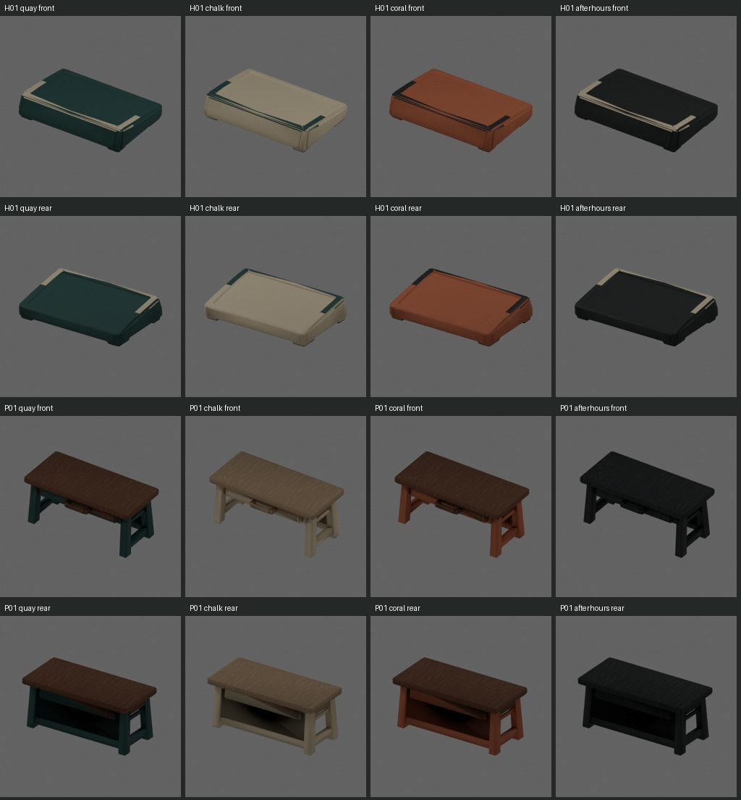
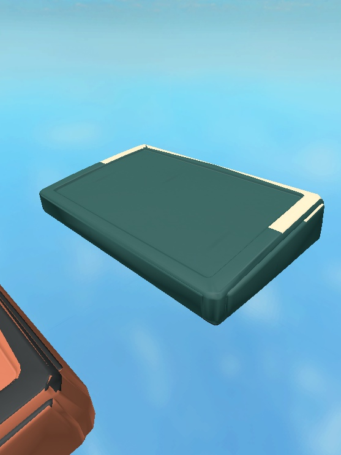
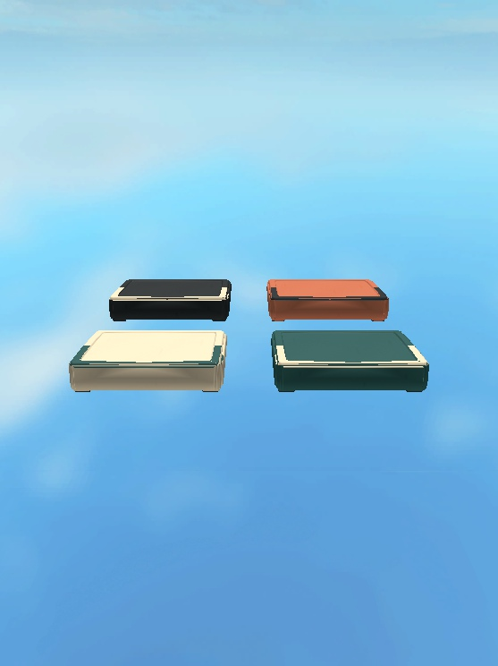
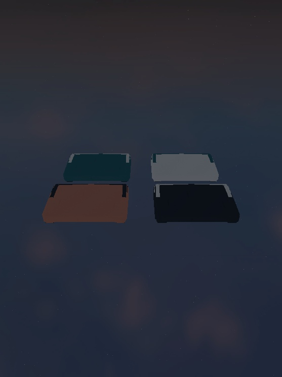
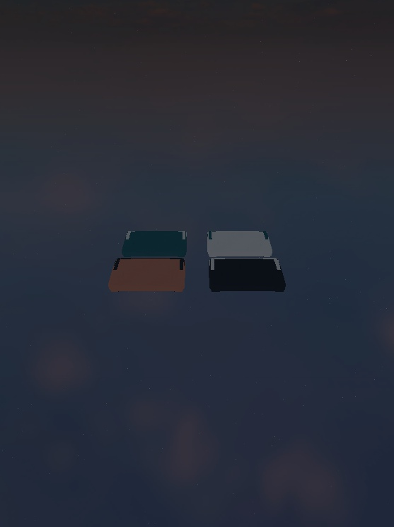

Candidate assets-folder-v1. Four existing finishes, unchanged FZ_MaterialAtlas_v1, twelve maps at 512/1024. The user approved this review. Ten changed maps are now applied to production inputs and real Roblox bindings; identical metalness maps are reused. Current application and acceptance results.
Exact source copies: Stylized Edition's 16-bit wood_fibers_06_height.tif and metal_scratch_01_height.tif. Preview sphere thumbnails were excluded. Wood grain and sparse handling marks come from those alphas; other roles retain the existing deterministic detail. No baked lighting, lettering or geometry edits.





Studio Client: actual candidate Color/Roughness/Metalness maps applied through the real finish renderer; four finishes, two isolated renderers, controls and geometry preserved, originals restored, borrowed templates retained and six editable images disposed. Server: eight Contracts plus eight Milestone groups pass. Two renderers in one client are not a two-player test. This original candidate review is now art-approved. Subsequent testing passed 21 real two-client checks with uploaded maps and temporary H01 art. Permanent native mesh import/reopen and cloud rejoin remain pending; issue #8 remains open.
Review manifest SHA-256: cb121901415faf49462218b73f7ae85f62d2197a6207797f1a2622f7d7d2206d